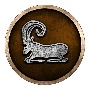
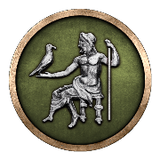
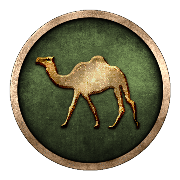

RTR: Imperium Surrectum
RTR: Imperium SurrectumArab
← all beliefs · all cultures · all regions · wiki index
Internal token arab, in the Arab group. 83 of 1,311 regions · named as a people in 83 · 10 factions default to it
Where these answers come from
descr_beliefs.txt declares the belief, its pip and its localised name. Where it is is the rel_<belief>_<tier> tag on a region's tag line in descr_regions.txt — the trailing digit is a 1-4 strength tier and never a percentage. Who the people are is that same file's ancestry field, whose shares do sum to 100. Who follows it is stated twice, by descr_sm_factions.txt's default religion and by export_descr_buildings.txt's faction_religion_<belief> alias, and where the two disagree both are shown. What the mod does with it is read off export_descr_buildings.txt, with the clauses that GENERATE the belief kept apart from the clauses the belief GATES.
Where it is on the map
83 of the 1,311 regions carry a rel_arab_… tag — 6.3% of the map. What matters is whether it is the majority belief in the settlement or a minority one. The file records a finer number behind that, and it is not a percentage — the one place it shows is how much religious_belief a building generates, which is the table further down.
| Strength | Regions | Share of its regions | Strength | Regions | Share of its regions | |||
|---|---|---|---|---|---|---|---|---|
| Majority | 70 | 84% | Minority | 13 | 16% |
Majority — 70 regions
Aboukaia-Leanitaia · Adramitia · Agraia-Agoubenia · Aidaia · Ailanitos Kolpos · Aisitaia · Anatolike Chatramonitaia · Anatolike Homeritis · Anatolike Omanitis · Arabike Aigyptos · Auranitis · Banizomeneia · Boreia Minaia · Chaldaia · Chattenia · Chrysorrhoas · Dioskoridou Nesos · Elisaria · Entos Smyrnophoros · Erythra Thalassa · Eudaimon Arabia · Gazaia · Gerrhaia · Haribut · Hesperos Arabia · Hesperos Chattenia · Homeritis · Ikaros · Iobaritaia · Kassanitis · Katharrheia · Kattabaneia · Kauchabenia · Lechienia · Libanophoria · Manahiytim · Mapharitis · Marda · Martenia-Orchenia · Massyas · Nagran · Nashaq · Nassan · Notia Elisaria · Notia Lechienia · Notia Omanitis · Notia Sarakenia · Omana Kolpos · Omanitis · Palmyrene · Pharanitaia · Qarnawu · Raqemo · Raybun · Rhaabenia-Masania · Rhambaia · Sabaia · Sabaike Aithiopia · Sachalites Kolpos · Sarakenia · Skenitaia · Ssabwat · Ssirwakh · Thamoudaia · Tingene · Trachonitis · Tylos · Yathil · Yathrib · Zabadaia
Minority — 13 regions
Abilene · Ankobaritis · Arka · Boreia Trogodytike · Deire · Epi Theron · Heroon Kolpos · Idoumaia · Madabitis · Nikephoreia · Orchoe · Pelousiake · Rabat Xaman
The people it belongs to
descr_regions.txt names Arab as a people living in 83 regions, 67 of them as the majority. Those shares come from the region's own ancestry field, which sums to 100 — they are a different measurement from the strength tier above and are not comparable with it.
Where its people live (83)
Every region that names this people also carries its belief tag, and every region that carries the tag names the people.
Who follows it
10 of the 239 factions in descr_sm_factions.txt carry "default religion": "arab". Between them they hold 31 of the 1,305 settlements the campaign file places.
| Faction | Culture | Provinces | Faction | Culture | Provinces | Faction | Culture | Provinces | Faction | Culture | Provinces |
|---|---|---|---|---|---|---|---|---|---|---|---|
 Saba | Arab | 6 | Arab | 5 | Hadhramaut | Arab | 4 |  Gerrha | Arab | 3 | |
| Arab | 3 |  Nabataea | Arab | 3 | Arab | 3 | Arab | 2 | |||
| Arab | 1 | Arab | 1 |
export_descr_buildings.txt answers the same question separately, with alias faction_religion_arab, and that alias is what the temples and government levels actually test. It names 10 entries.
The two agree exactly on who follows this belief.
What builds it
These building levels generate the belief in a region that already carries its tag, and the amount is what the tier decides. This is what the 1-4 tier is *for*.
| Where | 1 | 2 | 3 | majority | Where | 1 | 2 | 3 | majority | Where | 1 | 2 | 3 | majority | Where | 1 | 2 | 3 | majority |
|---|---|---|---|---|---|---|---|---|---|---|---|---|---|---|---|---|---|---|---|
| Dependency | +4 | +8 | +12 | +16 | Direct Rule | +2 | +4 | +6 | +8 | Indirect Rule | +4 | +8 | +12 | +16 | Large Colony | +10 | +10 | +10 | +10 |
| Region Information Scroll | +2 | +4 | +6 | +8 | Small Colony | +6 | +6 | +6 | +6 |
2 further grants are made only where the belief is not already present — that is the conversion path, and it stops once the belief is there.
| Where | What | Where | What | ||||
|---|---|---|---|---|---|---|---|
| Large Colony | Arab belief +16 | Small Colony | Arab belief +8 |
Spread by conversion — 31 lines
Beyond the tier table, 31 further religious_belief arab lines grant it on conditions that are not about the tier — who owns the settlement, what government it has, whether the belief is present at all. These are the conversion and temple rules.
| Where | Lines | Amounts | Where | Lines | Amounts | Where | Lines | Amounts | Where | Lines | Amounts |
|---|---|---|---|---|---|---|---|---|---|---|---|
| Shrine, Temple, Large Temple, Awesome Temple, Pantheion | 11 | +1, +2, +4, +6, +8, +10 | Small Colony, Large Colony | 6 | +2, +4, +6, +8, +10, +16 | Racing Course (Leisure), Stadion (Leisure), Hippodrome (Leisure), Huge Hippodrome (Leisure) | 4 | +1, +2 | Town Theatre (Leisure), Odeon (Leisure), Theatre (Leisure), Great Theatre (Leisure) | 4 | +2, +5 |
| Small School (Civic), Academy (Civic), Great Academy (Civic) | 3 | +1, +2, +3 | Amber Exports (Urban) | 1 | +2 | Homeland | 1 | +16 | Region Information Scroll | 1 | +16 |
Unrest and identity
| Group | Arab (arab) | Character trait | BeingArab | Unrest against its own group | 0 | Unrest against other groups | 0 |
| Hidden at zero presence | yes | Unrest message | “Arab culture is causing unrest in this settlement” |
Every one of the 53 beliefs RIS declares sets both multipliers to 0. No belief in this mod creates unrest against another, whether they share a group or not — the religious tension of the base game is switched off across the board, and what the belief system is used for instead is the numbers above.
What it gates
Nothing. No building level and no recruitment line in the mod is conditioned on a belief: all 273 building level blocks and all 29,894 recruit lines were checked against every rel<belief>_<tier> token, and 0 levels and 0 recruit lines came back. A belief is a number a settlement carries, not a key that opens anything._
Its group
The Arab group (arab) holds this belief alone — no other belief in descr_beliefs.txt names it.